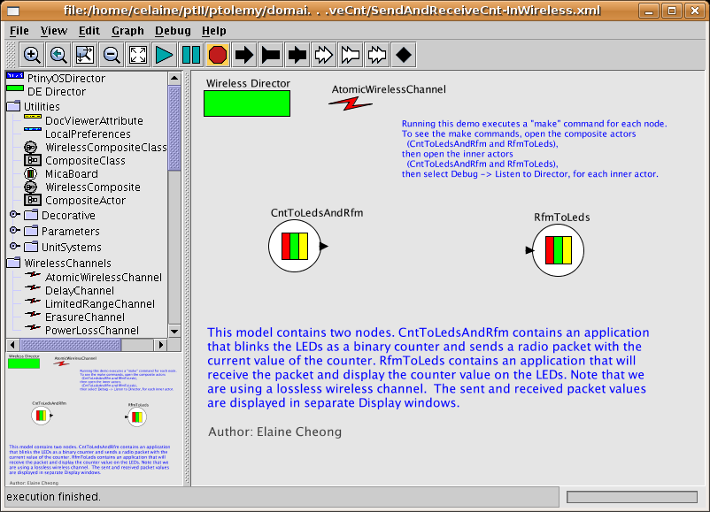
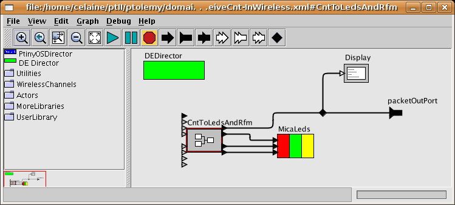
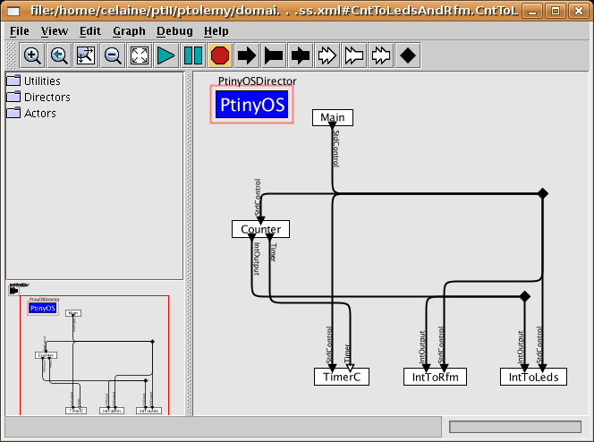
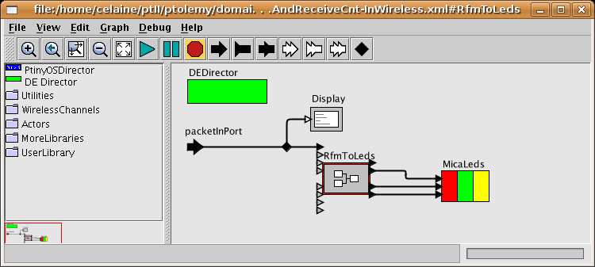
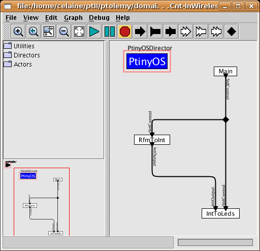
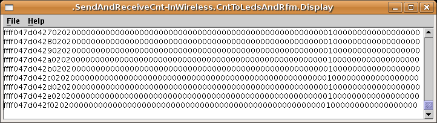
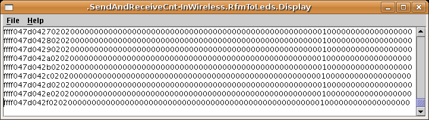

Top level view of SendAndReceiveCnt:

Hardware level view of sender:

Software level view of sender:

Hardware level view of receiver:

Software level view of receiver:

Packets produced by sender:

Packets received by receiver:
